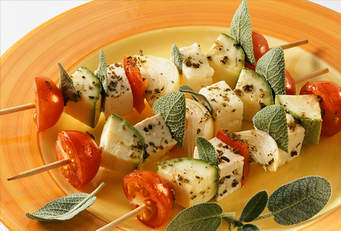

Grinders Cafe

A community cafe serving home cooked,locally sourced,organic food
With stunning veiws of the ocean,Example Cafe offers the perfect environment to unwind and recharge the batteries.
Our menu offers a wide range of breakfasts, brunches and lunches, including a range of vegiterian options.
Whether you sip on a fresh,hot coffee or a cooling smoothie, you never need to feel rushed-relax with friends or just watch the world go by.
This weekend's special brunch